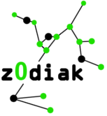

Naloži/shrani graf
Shrani graf
Naloži graf
Osnovne družine grafov
Izriši cikel
Izriši cirkulant
Izriši poln graf
Izriši pot
Izriši GPG
Ostala orodja
Dvodelnost
Oznake(on/off)
Premešaj
Izpis zaporedja stopenj
Shrani graf kot sliko
Izreki Posa, Diraca in Oreja
Približaj/odmakni pogled
Približaj
Odmakni
Nova vozlišèa
Nove povezave
Razdaljna particija
Avtomorfizem
Hamiltonova pot/cikel
Barvanje grafa
Izpisovanje(on/off)
Preimenuj vozlišèa
Ožina grafa
Premer grafa
Pomoè
Pozdravljeni! Za najboljše delovanje aplikacije uporabite najnovejšo razlièico brskalnika Google Chrome. Morebitna vprašanja in predloge pošljite na naslov: jurko2.luka@gmail.com. Hvala in upam, da bo aplikacija zadovoljila vaše potrebe! ~Luka Jurkoviæ
Copyright © Luka Jurkovic